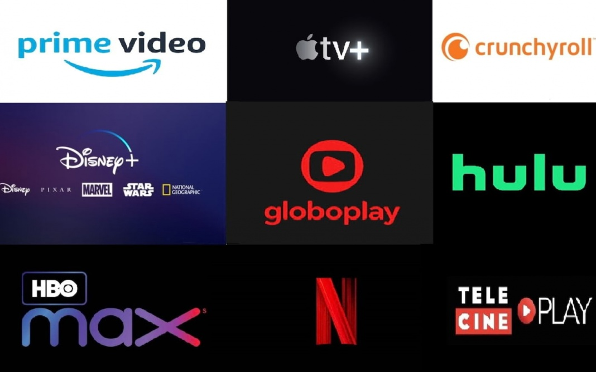
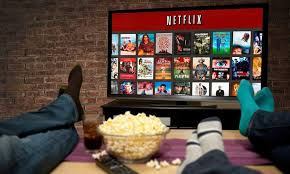
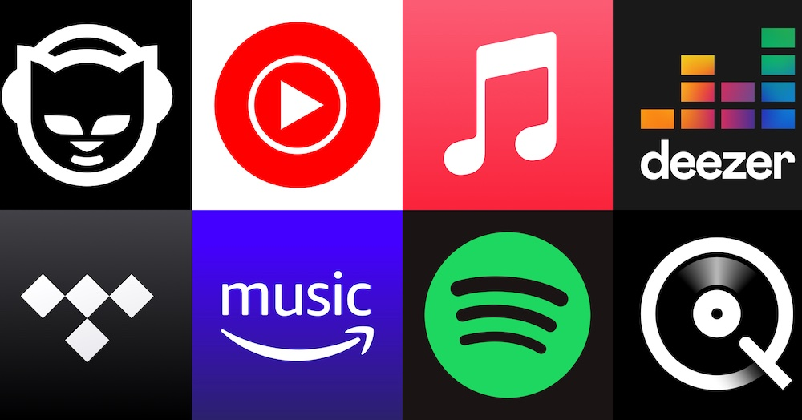
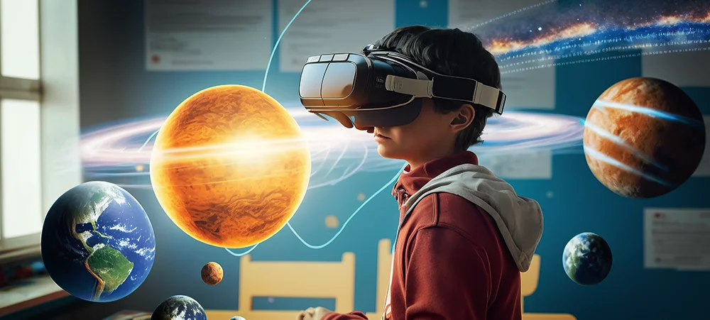

Filmes e séries são muito assistidos atualmente nas plataformas digitais.

A plataforma Netflix é a mais popular do Brasil hoje em dia.

A música está presente no dia a dia das pessoas através de aplicativos.
Podcasts são usados para informação e entretenimento.

Os games evoluíram bastante com a tecnologia moderna.
A tecnologia ajuda no desenvolvimento dos jogos e da internet.